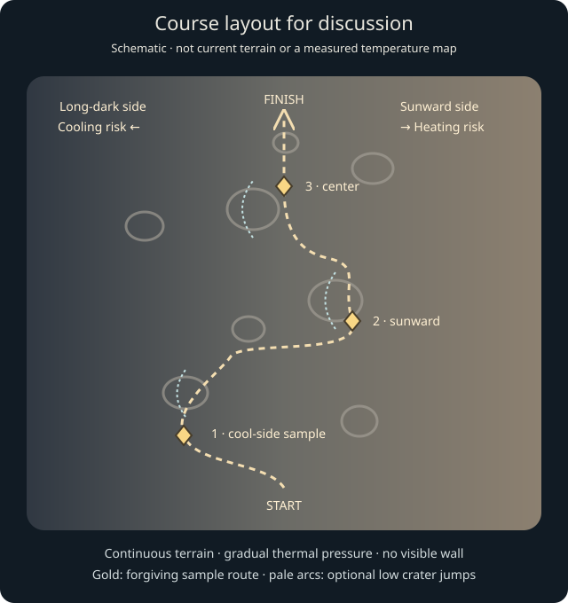

Terminator Zone — course and thermal-boundary discussion
October 7, 2026. The requested steering, collectibles and small jumps are implemented in the current pass. The thermal layout below is a discussion proposal, not a shipped heat/cold simulation or an inferred approval of failure consequences.
Implemented pass
- Left touch button at the left edge, right button at the right edge; same keyboard controls.
- Three glowing rock samples replace deployment actions at the existing station coordinates: left (-30, -175), right (48, -790), center (0, -1500). Passing within 7.5 metres collects one; distant passes and high overflights do not. No Deploy.
- Three selected 20–30 m diameter craters have low 0.8 m approach lips. At normal speed they offer small ballistic jumps over the bowls; surrounding terrain remains grounded. These are authored game features, not surveyed landforms.
- Left/right applies lateral thrust in air, with visible opposite-side exhaust. Forward momentum continues; releasing the control stops thrust, not momentum.
- New sample/jump records use v2 identities in each era. Sensor-course v1 records remain historical and visible in Accomplishments; the campaign stays intact.
The current ±118 m lateral clamp and outer terrain transition remain temporarily. Removing them safely needs the terrain and thermal-course pass below; changing only the clamp would let the rover drive on scenery with mismatched collision. This release must not be described as fixing thermal boundaries.
Why the existing edge looks artificial
stepSensors clamps lateral position to ±118 m. High-detail terrain extends to ±120 m and outer scenery uses coarser geometry and a different crater distribution. These coincide almost exactly. The standalone runner currently has no thermal simulation, even though older rover experiments contain a generic strain rule. That older symmetric strain rule is not a scientific temperature model.
Proposed course shape

Keep a short forward-running course roughly parallel to the terminator. The driving line winds through craters inside a broad playable thermal corridor; the astronomical day/night boundary does not snake around the collectibles.
- Learn / cool-side sample: broad readable gaps, then an easy leftward move to the first sample. Show the beginning of cooling pressure with plenty of room to return. Do not demand a thermal gamble before the player understands it.
- Crater choices / sunward sample: drift toward the right-hand sample through a more varied field. A forgiving way around a bowl and a low rim-jump line offer choices. Optional shortcuts can approach warmer ground without making every pickup require dangerous exposure.
- Return / finish: center sample, then a denser but legible final stretch and an unmistakable finish. Allow accumulated thermal stress to settle on the central route. Keep the three samples as destinations rather than scattering more collectibles. Retain Bombardment as a separate overlay of readable hazards.
Reuse strong current terrain. Rebuild the navigable shoulders with the same crater/ground functions and consistent near-player detail, extending collision and rendering together. One gray regolith material continues across the whole scene; sun angle, crater shadows and instrument feedback convey exposure, not painted blue/red strips, vertical walls or an obvious texture seam.
Heat and cold: what is science and what is game compression
Mercury's daytime surface can reach about 430°C and nighttime surface about −180°C. Its very thin exosphere does not transport heat like Earth's atmosphere; a solar day lasts about 176 Earth days. These are planet-scale conditions, not an instantaneous temperature step across our 236 m driving strip. NASA Mercury facts
The terminator is a lighting boundary, not a fixed safe-temperature contour. Surface cooling takes time, local slope/shadow matters, and a vehicle's internal temperature also responds over time. At sunset, newly dark ground need not be immediately deep-night cold. The exact safe operating band would depend on the vehicle's thermal design, which is fictional here. Mariner 10 nighttime cooling observations and NASA surface-lander thermal design support treating surface conditions and electronics temperature separately.
Proposed abstraction: continuous solar exposure and elapsed-darkness profiles feed a slowly changing vehicle thermal state. Farther sunward causes faster heating; farther into long-dark terrain causes faster cooling. Brief excursions are manageable; increasing distance and sustained exposure become dangerous. Returning toward the operating band reverses the trend gradually. Crossing an imaginary centerline never instantly clears accumulated temperature.
Expose only a small contextual heat/cold indicator when outside the comfortable operating range, with a clear inward cue and escalating warning. Use no fake ambient-air thermometer and no simulated wind, frost, glowing-hot regolith or heat haze suggesting an Earthlike atmosphere. Show terrain shadows naturally. Label distance/time compression as game design in pause/Encyclopedia copy. Do not claim exact failure seconds, scientific temperatures at authored x values, or proven fun before implementation and playtesting.
Q5 — producer decision required
Recommended critical consequence: the rover's electronics reach their operating limit, the run ends, and Retry is immediately available. The warning margin should make a brief mistake recoverable while holding outward becomes unmistakably unsafe. No teleport, recover button or invisible steering wall in the normal playable area.
Alternative for discussion: automatic inward rescue with a time penalty. This is more forgiving but weakens the physical consequence and can interrupt steering. Brian's choice concerns this failure behavior only; the direction of gradual heat/ cold risk and continuous-looking terrain is already requested. This discussion must not block unrelated development or reopen settled Q1/Q2/Q4 decisions.
Verification and optional P4 playtest
Automated checks cover all three pickups, no campaign auto-collection, low jump clearance/landing, air steering and release, course completion, era hazards, record separation/history, pause and touch-button placement. Desktop/tablet/phone captures should show the sample, lip, rover and thrust with an open central view.
When convenient: collect the three samples, use one raised rim, and steer both ways while airborne. Report whether the sample is readable early enough, the hop is appropriately tiny, and the jets clearly explain the lateral movement. These feel checks are opportunistic QA; they do not block unrelated work.